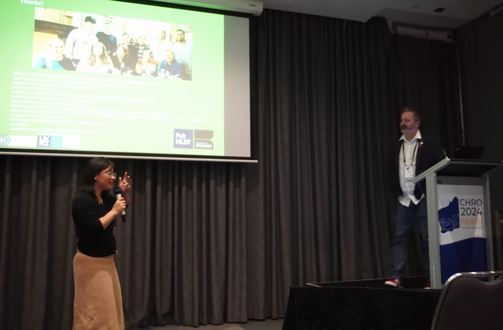
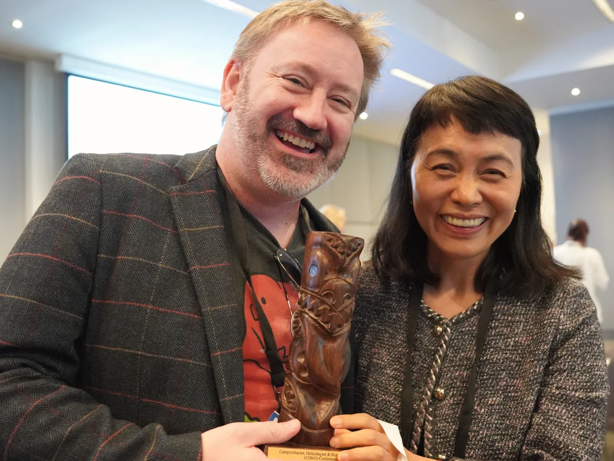

One Health AMR ecology
How resistance genes and bacterial populations move across wildlife, poultry, livestock, food, people and environments.
People & supervision
Research training should combine intellectual ambition, clear expectations, reproducible practice and equitable collaboration.
Research lead
Ben is a pathogen genomicist working on bacterial population biology, antimicrobial resistance, One Health transmission and childhood enteric disease. His work combines large comparative genomic datasets with field epidemiology and long-term international collaboration.
Current research is centred on Campylobacter and related enteric pathogens, but the analytical questions extend to staphylococci, Acinetobacter, Salmonella, Helicobacter and complex microbial communities.
A current photograph and formal Oxford profile link can be added in the next content pass.
Research community



Supervision philosophy
Students should understand why an analysis is being done, what assumptions it makes and how the result changes the biological argument. Early structure is therefore deliberate: define the paper-scale question, identify the decisive figure and build a reproducible route from raw data to interpretation.
Independence grows through ownership, not neglect. Supervision combines regular scientific discussion, clear written plans, practical troubleshooting, exposure to collaborators and progressively greater control over decisions and communication.
Potential directions
How resistance genes and bacterial populations move across wildlife, poultry, livestock, food, people and environments.
Asymptomatic carriage, persistent infection, mixed infections, microbiomes and consequences for child health.
Lineage emergence, host adaptation, recombination, pangenomes and genomic surveillance frameworks.
Recovering genomes and ecological signals from complex samples while retaining quantitative and methodological rigour.
Population-aware models for estimating source, host association, phenotype and uncertainty.
Connecting known determinants, genome-wide signals, phenotype and clinical or ecological context.
How projects are structured
A biologically important problem that can be answered with available or realistically collectable data.
A small set of linked manuscripts with clear claims, figures and dependencies.
Methods learned because they answer the question—not because they are fashionable.
Meaningful participation in collaborations, workshops, writing and presentation.
Current people
The final site can include current students, project staff, co-supervisors and alumni, with a short project description, links and photographs where each person has agreed.
Useful first contact should include the scientific question that interests you, relevant experience, the type of programme or funding route, and why this research environment is a good fit.
Formal opportunities will be linked here as they open.